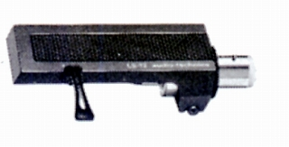
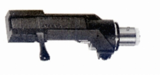
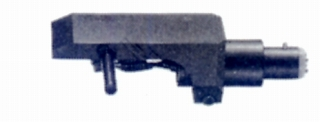
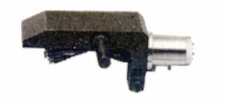
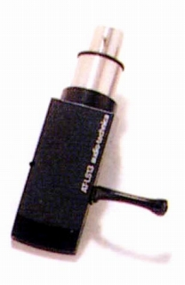
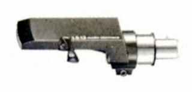
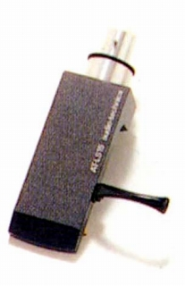
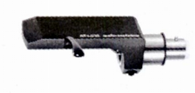
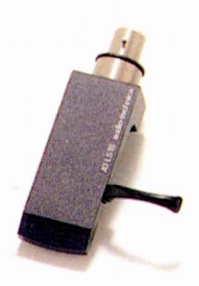
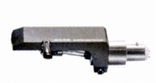

LSシリーズのヘッドシェル
アルミ製のシェル
LS-12

■価格 3,500円
■重量 12.5g
■備考 天面、ヘッドシリンダー基部、指掛けに防振材
リード線は0.12Ф×14芯の純銀リッツ線（AT-609相当）
リードは銀入りハンダで端子と直付け
MG-9の材質違いの姉妹機。
AT-LS10

■価格 2,800円
■重量 13g
■備考 アルミダイガストQダンプ
オーバーハングと左右の傾き調整可
このシリーズでは軽量級
MS-8の材質違いの姉妹機。
AT-LS1000

■価格 12,000円
■重量 13.5g
■備考 アルミブロック削り出し特殊加工
オーバーハングと左右の傾き調整可
型番からみてAT-1000の付属シェルの市販版か？
AT-LSEMT

■価格 12,000円
■重量 13.8g
■備考 アルミブロック削り出し特殊加工
オーバーハングと左右の傾き調整可
AT-LS1000のEMTトーンアーム専用品
AT-LS13


■価格 2,600円
■重量 13.4g
■備考 アルミダイガスト
オーバーハングと左右の傾き調整可
AT-LS15


■価格 3,500円
■重量 15.0g
■備考 アルミブロック削り出し
オーバーハングと左右の傾き調整可
AT-LS18


■価格 3,800円
■重量 18.2g
■備考 アルミ＆ステンレス削り出しQダンプ
オーバーハングと左右の傾き調整可
テクニカのインデックスへ